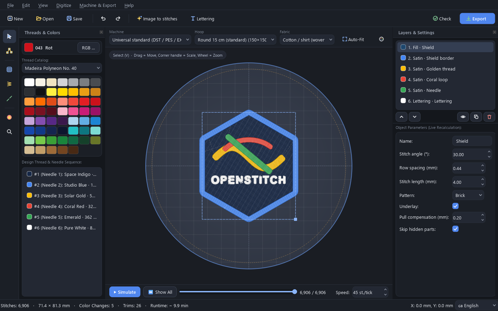
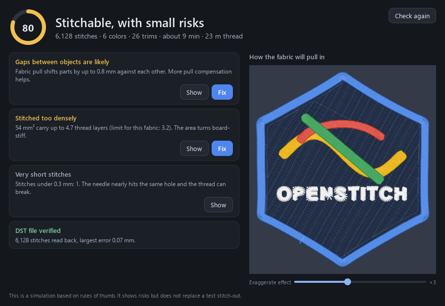
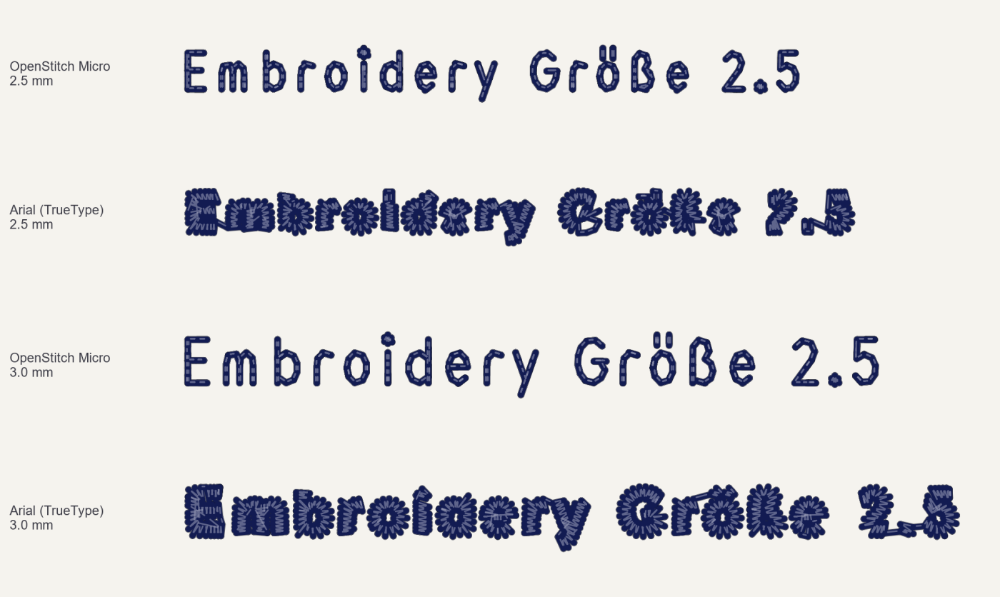

Your image, turned into stitches
Drop in a logo or drawing. OpenStitch picks thread colors from real catalogs like Madeira and Isacord, chooses satin or fill for each area, and adds underlay. Every part stays editable.

Find problems before they cost thread
Press F7 for a score out of 100 and plain explanations: too dense here, this stitch is too long, the design touches the hoop. Show takes you to the spot and Fix repairs it.
It also shows how your fabric will pull in, from T-shirt to denim. Stitch one small test bar, measure it, and the preview uses your real fabric.

Small lettering that stays readable
Normal fonts fill in below about 5 mm. The built-in OpenStitch Micro font is drawn as single strokes, the way commercial small-text fonts are, so names and dates stay readable from about 3 mm.

Works with your machine
Saves DST, PES, JEF, EXP, VP3, U01 and XXX for Tajima, Brother, Janome, Melco, Bernina, Pfaff, Husqvarna, Barudan, Singer and more. Every file is read back and checked after saving.
Download
Free and open source under AGPL-3.0.
- Windows64-bit, one file, no installer Download
- MacApple chip (M1 to M4) Download
- MacIntel chip Download
- Linux64-bit, unpack and run Download
macOS says it can't open the app
OpenStitch is free and not signed with a paid Apple certificate, so macOS blocks it the first time. Move it to Applications, try to open it once, then go to System Settings, Privacy & Security, and click Open Anyway. If macOS says the app is damaged, run this once in Terminal:
xattr -cr "/Applications/OpenStitch Studio.app"Help us test it on real machines
OpenStitch is tested heavily on the computer, but it still needs real stitch-outs. If you sew a design on your machine, a photo and one sentence about what went right or wrong helps more than anything else.
Share a stitch-out